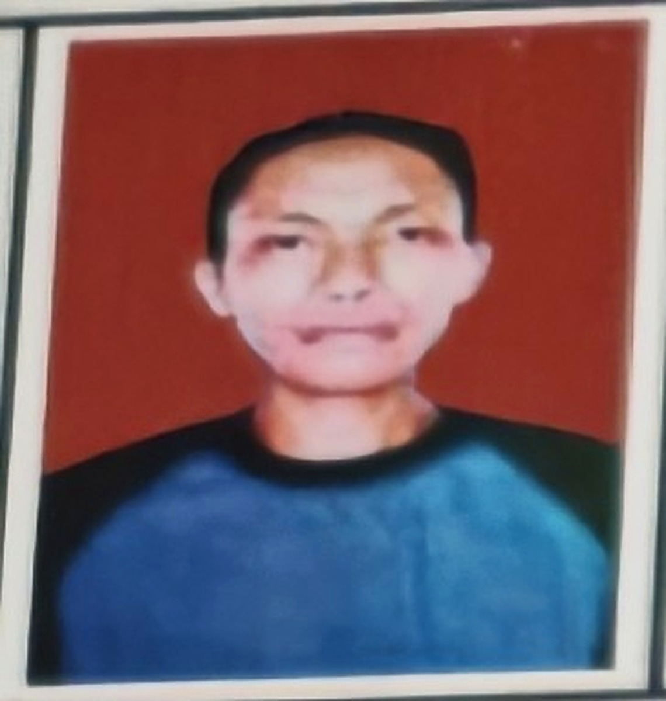
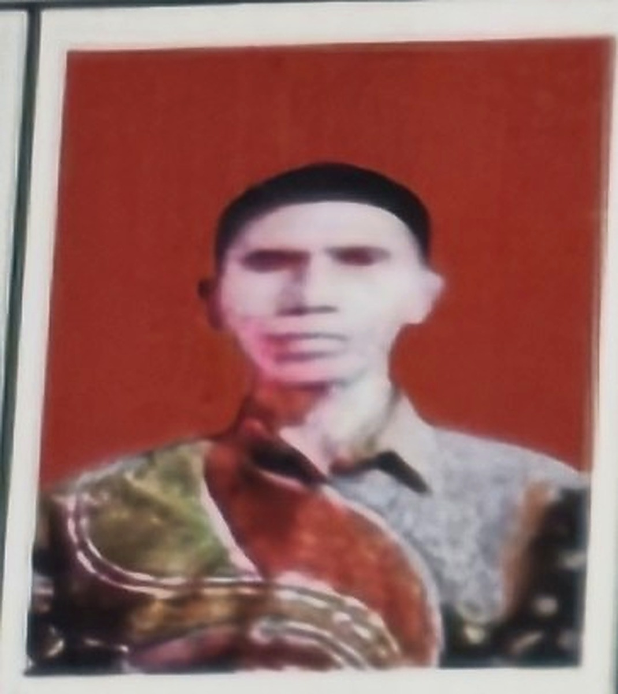
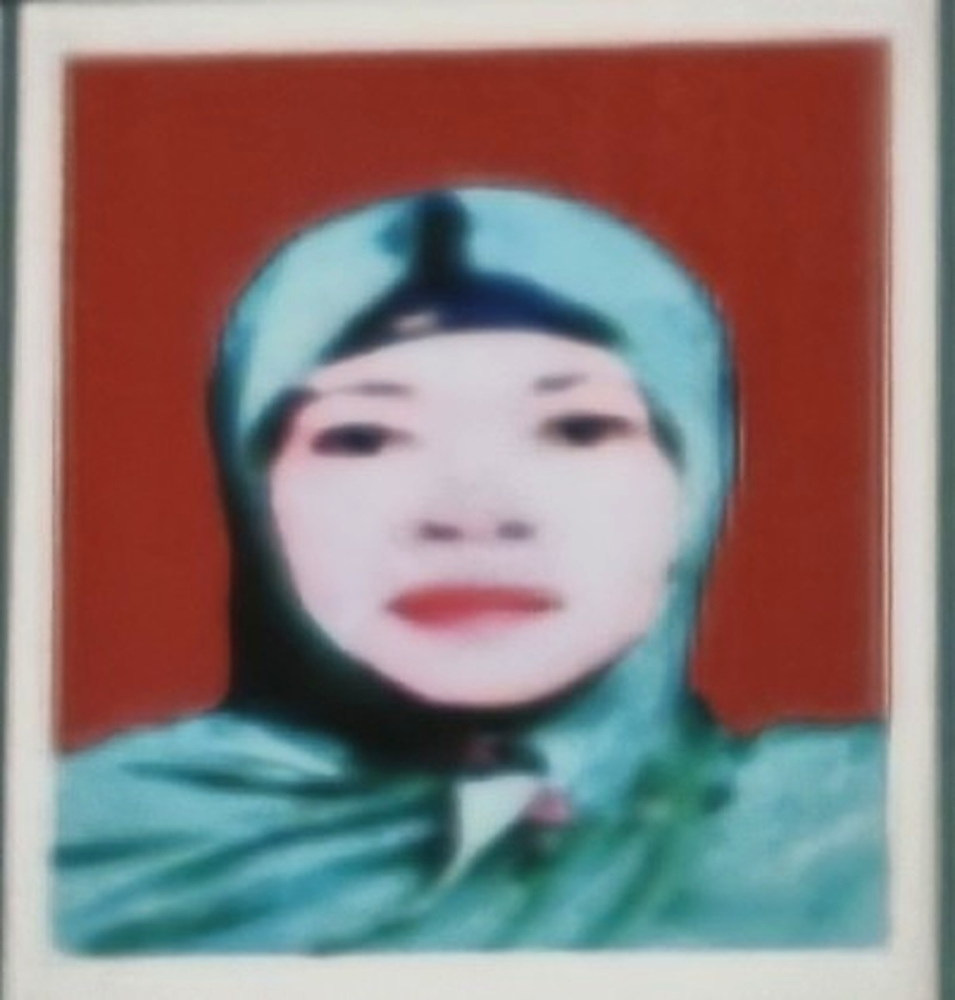

Tingkat kecamatan
Teguh Margiono, S.Sos., M.AP
Camat Sabangau
NIP. 19690120 199012 001
Informasi pejabat dan pengurus lingkungan yang tercantum dalam berkas website.
Camat Sabangau
NIP. 19690120 199012 001
Lurah Bereng Bengkel
NIP. 19771027 2007001 1 013
Foto dan identitas pengurus ditampilkan sesuai data yang tersedia pada arsip awal.



Jadwal pelayanan Kelurahan Bereng Bengkel.
Silakan datang pada hari dan jam operasional berikut.